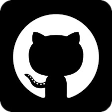

26 anos, casada, mãe de um menino
(51)99201-1936
Capão da Canoa
Quero desenvolver minhas habilidades e também contribuir para o sucesso da empresa. Em busca de uma oportunidade para desenvolver e melhorar meus conhecimentos, e também algo que possa me instruir de forma crescente e contínua, visando sempre o crescimento entre mim e a empresa.
Tenho meu studio localizado em Capão da Canoa.Conheci o curso de ADS através do meu irmão que já exercia a profissão de full stack, sempre fui muito criativa e curiosa, até ano passado não sabia o que fazer até meu irmão me falar sobre o ADS e suas vantagens, comecei o curso no primeiro semestre de 2023, estou cada dia mais empolgada e feliz com esse curso maravilhoso.
Escola Estadual de Ensino médio Luiz Moschetti
Cursando ADS na Ulbra/Torres
Dom Gourmet cafeteria
Área de atuação: Balconista/Atendente Atividade: funcionária Duração: 6 mesesDoces da praia
Área de atuação: Atendente/barista. Atividade: funcionária Duração: 3 anoscriatividade
Boa Comunicação
Trabalho em equipe
Proativa
flexibilidade
Resiliência
Otimização de desempenho
Solução de problemas e implantação de soluções
Pensamento analítico
Desenvolvimento e design de software